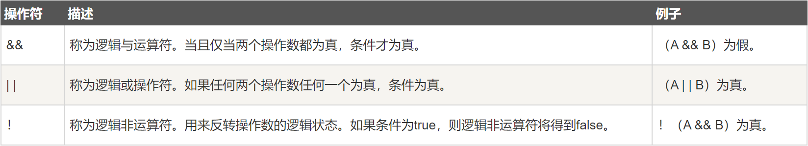

6 Java运算符¶

Java一共有以下几类运算符：
算术运算符
关系运算符
位运算符
逻辑运算符
赋值运算符
其他运算符
总的来说，Java运算符跟其他编程语言的运算符大同小异，可以快速浏览一下。
算术运算符¶
假设整数变量A的值为10，整数变量B的值为20：

特别的是，前缀自增自减法（++a
--a）和后缀自增自减法（a++ a--）：
前缀自增自减法（++a
--a）：先进行自增自减，再进行表达式运算。
后缀自增自减法（a++
a--）：先进行表达式运算，再进行自增自减。
示例：
public class Test {
public static void main(String[] args) {
int d = 25;
// 查看 d++ 与 ++d 的不同
System.out.println("d++ = " + (d++) );
System.out.println("++d = " + (++d) );
}
}
结果为：
d++ = 25
++d = 27
逻辑运算符¶
假设布尔变量A为真，布尔变量B为假：

需要注意的是，如果第一个操作数已经能判断结果了，那么就不会执行下一个操作数，比如：
public class Test {
public static void main(String[] args) {
boolean a = false;
boolean b = true;
boolean c = a && b; // a已经能判断结果为false，不再执行b
boolean d = b || a; // b已经能判断结果为true，不再执行a
}
}
赋值运算符¶

其他运算符¶
条件运算符
variable x = (expression) ? value if true : value if false
示例：
public class Test {
public static void main(String[] args){
int a , b;
a = 10;
// 如果 a 等于 1 成立，则设置 b 为 20，否则为 30
b = (a == 1) ? 20 : 30;
System.out.println( "Value of b is : " + b ); // 30
// 如果 a 等于 10 成立，则设置 b 为 20，否则为 30
b = (a == 10) ? 20 : 30;
System.out.println( "Value of b is : " + b ); // 20
}
}
条件运算符也叫做三元运算符，三元场景可以多用这个运算符简写代码。
instanceof 运算符
( Object reference variable ) instanceof (class/interface type)
用来判断对象是否为类的实例。比如：
String name = "James";
boolean result = name instanceof String; // 由于 name 是 String 类型，所以返回真